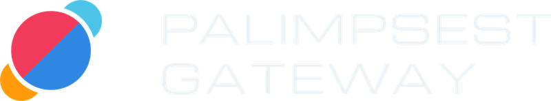

Self-hosted · OpenAI-compatible
One endpoint in front of all your LLM keys.
Pool OpenAI, Anthropic, Gemini and OpenRouter keys. Fail over automatically. Keep every conversation going across the switch.
- MIT licensed
- Python 3.11 | 3.12
- FastAPI + Redis
- Docker Compose
POST /v1/chat/completions model=gpt-4o-mini session=my-chat key openai-free-1 429 rate limited rest 60s key openai-free-2 quota spent wait for reset key openai-paid 200 ok history carried over reply returned · 1 request counted · 0 changes in your app
Your apps see one URL. Behind it, a pool.
Apps talk to the gateway exactly as they would talk to OpenAI. Provider keys never leave it.
Your app
Any OpenAI client, with a gateway key pgw_live_…
Palimpsest Gateway
Admit, load history, pick a key, fail over, meter usage.
Providers
OpenAI, Anthropic, Google Gemini, OpenRouter.
- Authenticate. The app sends its own gateway key, never a provider key.
- Admit. Daily cap and remaining pool capacity are checked.
- Load context. With
X-Session-ID, stored history is added for you. - Choose a key. Only active keys that serve the model and aren't resting.
- Fail over. Rate limit, outage or bad key: retry on the next key, same call.
- Answer and record. Reply in OpenAI format, turn saved, usage counted once.
Features
Everything needed to run a shared key pool without every app re-implementing it.
- Drop-in OpenAI API
/v1/chat/completionswith streaming and tool calls, plus/v1/models.- Multi-provider pool
- Keys with optional request cap, token budget, reset schedule and label.
- Automatic failover
- Rate limits, outages and exhausted quotas are retried within a fixed budget. 503 with a retry hint when nothing is left.
- Conversation memory
- Per-user session history, so clients send only the new message and context survives a switch.
- Fairness controls
- Per-user daily caps and a pool low-water mark that throttles before the pool runs dry.
- Keys stay private
- Encrypted at rest, never returned after creation. Users only see generic errors and stable codes.
- Operator dashboard
- Key health, usage, failovers, users, sessions, latency, costs, alerts and audit trail.
- Costs from your prices
- You enter per-model prices and a monthly budget. Nothing bundled, so nothing goes stale.
- Alerts and exports
- Low capacity, key problems, error rate, optional webhook. CSV export for usage, requests and audit.
- Observable
- One structured JSON log line per request and a Prometheus metrics endpoint.
Quick start
Docker with Compose v2 is the only prerequisite. No .env, no manual key generation.
01Clone and run
git clone https://github.com/hammrouni/palimpsest-gateway.git cd palimpsest-gateway docker compose up -d --wait
API at localhost:8000, dashboard at /dashboard/, docs at /docs. First boot generates and persists a master key and an operator key.
02Add a provider key
echo 'PALIMPSEST_PROVIDER_API_KEY=sk-your-key' >> .env docker compose up -d
Or add pool keys in the dashboard. Read the operator key with docker compose exec app cat /app/.secrets/operator_key.
03Create a user and call it
from openai import OpenAI
client = OpenAI(base_url="http://localhost:8000/v1", api_key="pgw_live_...")
reply = client.chat.completions.create(
model="gpt-4o-mini", # a model one of your pool keys serves
messages=[{"role": "user", "content": "Hello"}],
)
print(reply.choices[0].message.content)
Create the user under Users → + New user; the key is shown once. Send the same X-Session-ID header to keep a conversation going server-side.
127.0.0.1:8000 by default and has no TLS or IP rate limiting. Before exposing it, set PALIMPSEST_BIND=0.0.0.0 behind a TLS reverse proxy, with PALIMPSEST_ALLOW_SIGNUP=false and a user daily cap.Paid keys, free keys, or both
The gateway tries keys that still have requests left first, most room first. Uncapped keys come last. Give limited keys a cap and they are used before the fallback.
| Paid keys | Add without a cap, or with a safety cap. Enter prices and a monthly budget under Costs, and turn on Alerts. |
|---|---|
| Free-tier keys | Set daily_cap at or below the published allowance with the matching reset period. Spent keys are skipped until reset. |
| Not a model host | It forwards to providers and runs no models. |
| Not a loophole | It uses only the keys you give it, within each key's limits. It does not lift provider limits. |
| Capacity | If every key is out of quota, clients get a 503 with Retry-After. |
| License | MIT |